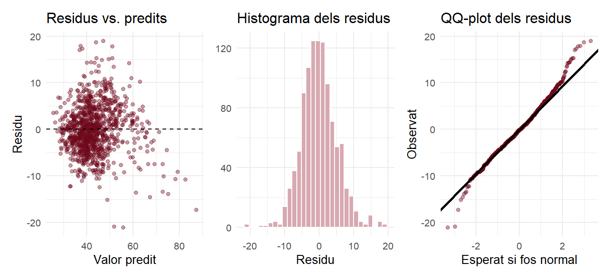
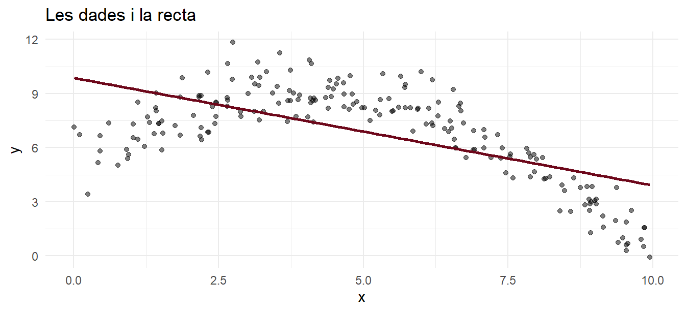
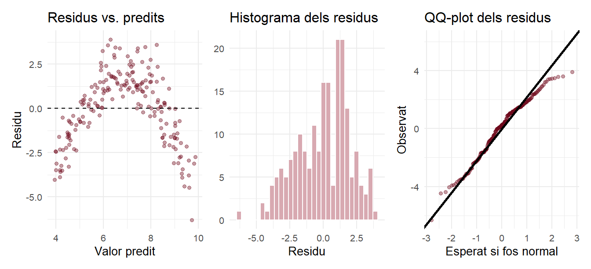
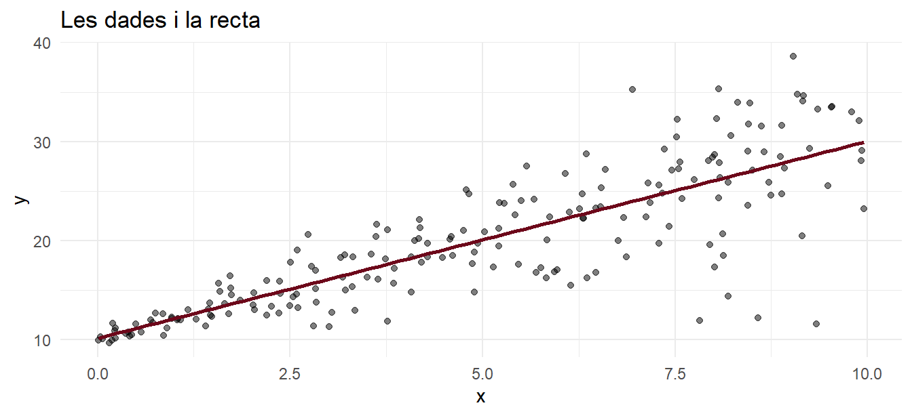
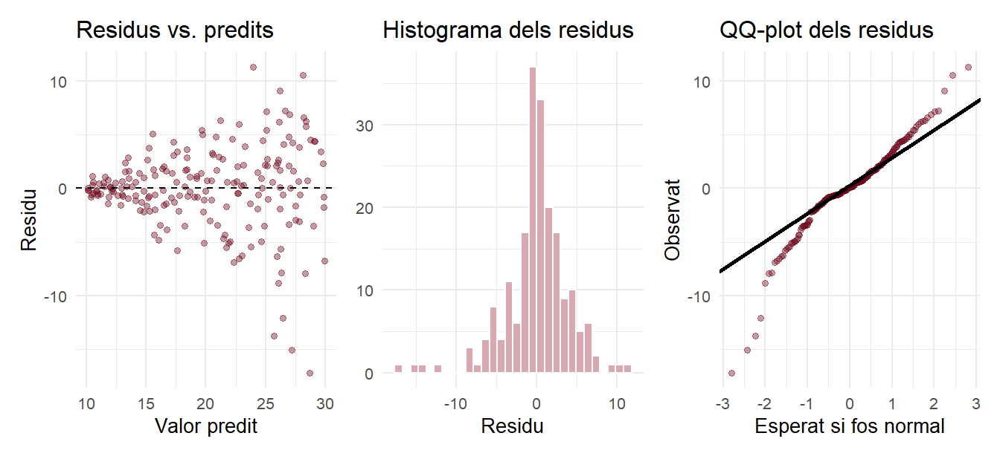
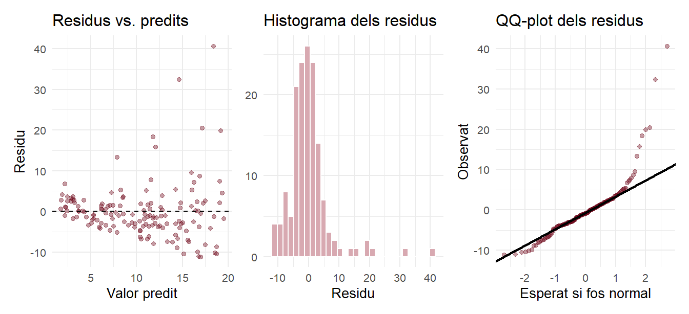
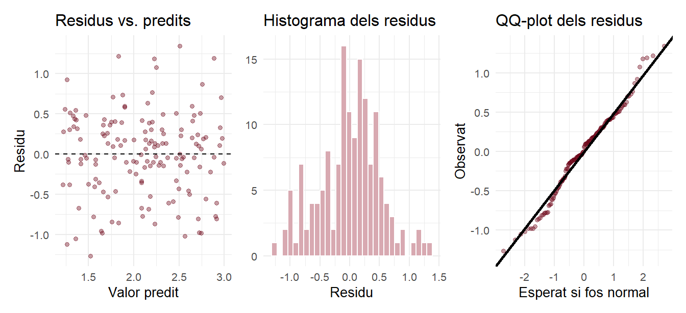

Codi
model_bcn <- lm(abstencio ~ perc_atur, data = bcn)
diagnosi(model_bcn)
Sessió 4 · Explicació complementària
A les slides hem vist, en una sola slide, quan no ens podem fiar d’un model de regressió: les quatre lletres LINE. Aquí veurem cada supòsit amb un exemple que sí el compleix i un que no, com es comprova amb els gràfics dels residus i què fer si no es compleix. No cal entendre el codi (és plegat): n’hi ha prou de llegir el text i mirar els gràfics.
La recta de mínims quadrats sempre es pot calcular, i el pendent sempre descriu la tendència de les dades. Els supòsits importen quan volem anar més enllà: perquè els p-valors, els intervals de confiança i les prediccions siguin fiables.
Els supòsits són quatre (en anglès, LINE):
| Supòsit | En paraules | |
|---|---|---|
| L | Linealitat | La relació és una línia recta, no una corba |
| I | Independència | Cada cas és independent dels altres |
| N | Normalitat | Els errors (residus) tenen forma de campana |
| E | Igualtat de variàncies | La dispersió dels punts al voltant de la recta és igual per a tota la X |
Gairebé tots es comproven mirant els residus: la distància de cada punt a la recta (vegeu l’explicació 2).
El model de les slides (abstenció segons atur a Barcelona). Fem tres gràfics dels residus:
Com es llegeixen?
En el nostre model, tot és raonable: un núvol sense forma clara, una campana i un QQ-plot que segueix la línia (amb les cues una mica allunyades, cosa habitual i sense importància amb 1.068 casos).
Simulem una relació en forma de corba i hi ajustem, malament, una recta:
`geom_smooth()` using formula = 'y ~ x'

Al gràfic de residus vs. predits, els punts fan una U invertida: la recta s’equivoca sistemàticament (queda per sobre de les dades als extrems i per sota al mig). La recta no és un bon resum d’aquestes dades.
Què fer? El primer, mirar el diagrama de dispersió abans de fer el model. Si és una corba, es pot transformar alguna variable o fer servir models més flexibles.
Simulem unes dades on, com més gran és X, més escampats estan els punts (com passa sovint amb ingressos o preus):
`geom_smooth()` using formula = 'y ~ x'

Al gràfic de residus vs. predits, els punts fan forma d’embut: estrets a l’esquerra i amples a la dreta. La recta continua sent un bon resum de la tendència, però els errors estàndard (i, per tant, els p-valors i els intervals) no són fiables.
Què fer? Sovint ho arregla transformar la Y amb el logaritme (apartat següent). També hi ha errors estàndard «robustos», que ja queden fora del curs.
Simulem una Y amb una cua llarga a la dreta (com els ingressos: molts valors moderats i uns pocs de molt grans):

L’histograma dels residus no és una campana (té una cua a la dreta) i el QQ-plot fa una corba. A més, hi ha una mica d’embut.
Què fer? Una solució habitual és fer el model amb el logaritme de Y, que «comprimeix» els valors grans:

Ara els residus tenen forma de campana, el QQ-plot segueix la línia i ja no hi ha embut.
El pendent ja no és «quant augmenta Y», sinó, aproximadament, en quin percentatge augmenta. Per exemple, un pendent de 0,20 vol dir que per cada unitat més de X, Y augmenta un 20 % (aproximadament: \((e^{0{,}20} - 1) \times 100 \approx 22 \%\)).
Recordeu també la sessió 3: amb mostres grans, la normalitat dels residus importa poc (pel teorema del límit central).
La independència no es veu en els gràfics de residus: depèn de com s’han recollit les dades. Els casos no són independents quan, per exemple:
En les seccions censals, les seccions veïnes s’assemblen entre si, i això fa que els errors estàndard siguin una mica optimistes. Per a una primera anàlisi descriptiva no és greu, però cal tenir-ho present. Si les dades tenen una estructura així, calen models específics (models multinivell, sèries temporals…).
| Si veieu… | Problema | Què fer |
|---|---|---|
| Una corba al diagrama de dispersió o als residus | L | No fer una recta; transformar alguna variable |
| Casos repetits, en el temps o agrupats | I | Models específics (fora del curs) |
| Residus asimètrics, amb mostres petites | N | Transformar Y amb el logaritme |
| Un embut als residus | E | Transformar Y amb el logaritme |
plot(model) dibuixa directament els gràfics de diagnosi d’un model (són de R base, sense ggplot2). Premeu Enter a la consola per passar d’un gràfic al següent.
---
title: "Els supòsits del model lineal, pas a pas"
subtitle: "Sessió 4 · Explicació complementària"
code-fold: true
code-tools: true
---
```{r setup, include=FALSE, warning=FALSE, message=FALSE}
set.seed(123)
library(tidyverse)
library(patchwork)
bordeus <- "#6D071A"
bordeus_clar <- "#D8A9B1"
seccions <- read_csv2("../dades/seccions_censals.csv", show_col_types = FALSE)
bcn <- seccions |> filter(municipi == "Barcelona")
# Els tres gràfics de diagnosi d'un model, un al costat de l'altre
diagnosi <- function(model, titol = NULL) {
d <- tibble(predit = fitted(model), residu = resid(model))
g1 <- ggplot(d, aes(x = predit, y = residu)) +
geom_point(alpha = 0.4, color = bordeus) +
geom_hline(yintercept = 0, linetype = "dashed") +
labs(title = "Residus vs. predits", x = "Valor predit", y = "Residu")
g2 <- ggplot(d, aes(x = residu)) +
geom_histogram(bins = 30, fill = bordeus_clar, color = "white") +
labs(title = "Histograma dels residus", x = "Residu", y = NULL)
g3 <- ggplot(d, aes(sample = residu)) +
stat_qq(alpha = 0.4, color = bordeus) +
stat_qq_line(linewidth = 1) +
labs(title = "QQ-plot dels residus", x = "Esperat si fos normal", y = "Observat")
(g1 + g2 + g3) & theme_minimal(base_size = 10)
}
```
::: {.callout-note}
## Què hi trobareu?
A les slides hem vist, en una sola slide, quan no ens podem fiar d'un model de regressió: les quatre lletres **LINE**. Aquí veurem cada supòsit amb un exemple que **sí** el compleix i un que **no**, **com es comprova** amb els gràfics dels residus i **què fer** si no es compleix. No cal entendre el codi (és plegat): n'hi ha prou de llegir el text i mirar els gràfics.
:::
## 1. Per què importen els supòsits?
La recta de mínims quadrats **sempre** es pot calcular, i el pendent sempre descriu la tendència de les dades. Els supòsits importen quan volem anar més enllà: perquè els **p-valors**, els **intervals de confiança** i les **prediccions** siguin fiables.
Els supòsits són quatre (en anglès, **LINE**):
| | Supòsit | En paraules |
|---|---|---|
| **L** | Linealitat | La relació és una **línia recta**, no una corba |
| **I** | Independència | Cada cas és **independent** dels altres |
| **N** | Normalitat | Els **errors** (residus) tenen forma de campana |
| **E** | Igualtat de variàncies | La dispersió dels punts al voltant de la recta és **igual** per a tota la X |
: {tbl-colwidths="[6,24,70]"}
Gairebé tots es comproven mirant els **residus**: la distància de cada punt a la recta (vegeu l'[explicació 2](02_regressio_pas_a_pas.qmd)).
## 2. Els gràfics dels residus: un model que compleix
El model de les slides (abstenció segons atur a Barcelona). Fem tres gràfics dels residus:
```{r}
#| fig-height: 3.2
model_bcn <- lm(abstencio ~ perc_atur, data = bcn)
diagnosi(model_bcn)
```
Com es llegeixen?
- **Residus vs. predits** (esquerra): els punts han de fer un **núvol sense forma**, centrat al 0. Si fan una **corba**, falla la linealitat (L). Si fan forma d'**embut**, falla la igualtat de variàncies (E).
- **Histograma** (centre): ha de tenir forma de **campana**. Si no, falla la normalitat (N).
- **QQ-plot** (dreta): els punts han de seguir la **línia** (com a la [sessió 3](../../sessio-3/explicacions/04_proves_normalitat.qmd)).
En el nostre model, tot és raonable: un núvol sense forma clara, una campana i un QQ-plot que segueix la línia (amb les cues una mica allunyades, cosa habitual i sense importància amb 1.068 casos).
## 3. L: quan la relació no és una línia
Simulem una relació en forma de **corba** i hi ajustem, malament, una recta:
```{r}
#| fig-height: 3.2
corba <- tibble(x = runif(200, 0, 10)) |>
mutate(y = 5 + 2 * x - 0.25 * x^2 + rnorm(200, 0, 1))
ggplot(corba, aes(x = x, y = y)) +
geom_point(alpha = 0.5) +
geom_smooth(method = "lm", se = FALSE, color = bordeus) +
labs(title = "Les dades i la recta") +
theme_minimal()
diagnosi(lm(y ~ x, data = corba))
```
Al gràfic de residus vs. predits, els punts fan una **U invertida**: la recta s'equivoca sistemàticament (queda per sobre de les dades als extrems i per sota al mig). La recta no és un bon resum d'aquestes dades.
**Què fer?** El primer, **mirar el diagrama de dispersió abans de fer el model**. Si és una corba, es pot transformar alguna variable o fer servir models més flexibles.
## 4. E: quan la dispersió no és igual (l'embut)
Simulem unes dades on, com més gran és X, més escampats estan els punts (com passa sovint amb ingressos o preus):
```{r}
#| fig-height: 3.2
embut <- tibble(x = runif(200, 0, 10)) |>
mutate(y = 10 + 2 * x + rnorm(200, 0, 0.5 + 0.6 * x))
ggplot(embut, aes(x = x, y = y)) +
geom_point(alpha = 0.5) +
geom_smooth(method = "lm", se = FALSE, color = bordeus) +
labs(title = "Les dades i la recta") +
theme_minimal()
diagnosi(lm(y ~ x, data = embut))
```
Al gràfic de residus vs. predits, els punts fan forma d'**embut**: estrets a l'esquerra i amples a la dreta. La recta continua sent un bon resum de la tendència, però els **errors estàndard** (i, per tant, els p-valors i els intervals) no són fiables.
**Què fer?** Sovint ho arregla transformar la Y amb el **logaritme** (apartat següent). També hi ha errors estàndard «robustos», que ja queden fora del curs.
## 5. N: quan els residus no són normals
Simulem una Y amb una **cua llarga a la dreta** (com els ingressos: molts valors moderats i uns pocs de molt grans):
```{r}
#| fig-height: 3.2
asimetrica <- tibble(x = runif(150, 1, 10)) |>
mutate(y = exp(1 + 0.2 * x + rnorm(150, 0, 0.5)))
diagnosi(lm(y ~ x, data = asimetrica))
```
L'histograma dels residus no és una campana (té una cua a la dreta) i el QQ-plot fa una **corba**. A més, hi ha una mica d'embut.
**Què fer?** Una solució habitual és fer el model amb el **logaritme** de Y, que «comprimeix» els valors grans:
```{r}
#| fig-height: 3.2
asimetrica <- asimetrica |>
mutate(log_y = log(y))
diagnosi(lm(log_y ~ x, data = asimetrica))
```
Ara els residus tenen forma de campana, el QQ-plot segueix la línia i ja no hi ha embut.
::: {.callout-tip}
## Com s'interpreta un model amb log(Y)?
El pendent ja no és «quant augmenta Y», sinó, aproximadament, **en quin percentatge** augmenta. Per exemple, un pendent de 0,20 vol dir que per cada unitat més de X, Y augmenta un 20 % (aproximadament: $(e^{0{,}20} - 1) \times 100 \approx 22 \%$).
:::
Recordeu també la [sessió 3](../../sessio-3/explicacions/04_proves_normalitat.qmd): amb **mostres grans**, la normalitat dels residus importa poc (pel teorema del límit central).
## 6. I: quan els casos no són independents
La independència no es veu en els gràfics de residus: depèn de **com s'han recollit les dades**. Els casos **no** són independents quan, per exemple:
- Hi ha **mesures repetides** de les mateixes persones (abans i després d'una intervenció).
- Les dades són **en el temps** (l'atur d'aquest mes s'assembla al del mes passat).
- Els casos són **agrupats** (alumnes de la mateixa escola, seccions censals del mateix barri).
En les seccions censals, les seccions **veïnes** s'assemblen entre si, i això fa que els errors estàndard siguin una mica optimistes. Per a una primera anàlisi descriptiva no és greu, però cal tenir-ho present. Si les dades tenen una estructura així, calen models específics (models multinivell, sèries temporals...).
## 7. Què fer, en resum
| Si veieu... | Problema | Què fer |
|---|---|---|
| Una corba al diagrama de dispersió o als residus | **L** | No fer una recta; transformar alguna variable |
| Casos repetits, en el temps o agrupats | **I** | Models específics (fora del curs) |
| Residus asimètrics, amb mostres petites | **N** | Transformar Y amb el logaritme |
| Un embut als residus | **E** | Transformar Y amb el logaritme |
: {tbl-colwidths="[40,10,50]"}
::: {.callout-tip}
## Una drecera de R
`plot(model)` dibuixa directament els gràfics de diagnosi d'un model (són de R base, sense `ggplot2`). Premeu <kbd>Enter</kbd> a la consola per passar d'un gràfic al següent.
:::
## En resum
1. Els supòsits importen per poder fiar-nos dels **p-valors**, els **intervals** i les **prediccions**.
2. Es comproven, sobretot, amb els **gràfics dels residus**: un núvol sense forma, una campana i un QQ-plot que segueix la línia.
3. El més important, i el més fàcil: **mirar el diagrama de dispersió** abans de fer el model.
4. Amb mostres grans, la normalitat importa poc. La linealitat i la independència, sempre.